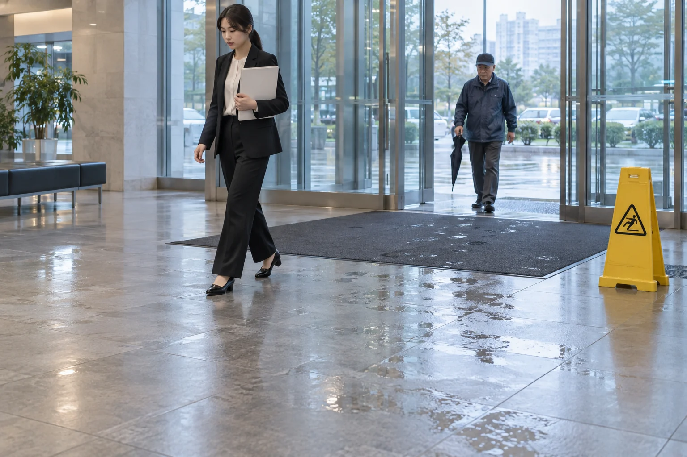

기업·기관의 미끄럼방지
비 오는 날의 출입구, 청소 후 화장실. 방문객과 직원이 함께 쓰는 바닥입니다.
사고가 생기기 전에 미끄러운 구역부터 개선하세요.

시설 담당자의 검토 기준.
식각 방식은 적합한 기존 타일·석재를 활용하는 표면 시공입니다. 전체 면적의 공사를 먼저 정하기보다, 어떤 구역에 어떤 작업이 필요한지부터 구분합니다.
| 담당자의 질문 | 계획의 기준 |
|---|---|
| 어디까지 시공할까요? | 출입구·로비·화장실 등 불편이 생기는 위치와 실제 작업 면적을 구분합니다. |
| 기존 바닥에 맞나요? | 재질과 기존 마감을 살피고 샘플 구역의 표면 반응·외관을 담당자와 함께 봅니다. |
| 시설 운영은 어떻게 하나요? | 작업 시간, 이용 제한 구역과 우회 동선을 하나의 계획으로 정리합니다. |
| 무엇을 전달받나요? | 작업 구역과 진행 내용, 이용 재개 시점과 이후 관리 방법을 안내합니다. |

업무 시간과 통행을 계획에 반영합니다.
- 이용이 적은 시간민원·근무 시간과 보안 출입 조건을 기준으로 배치
- 구역과 우회 동선구역 분리가 가능한 범위에서 순차 작업 계획
- 마무리와 이용 안내작업 결과와 현장 조건에 맞춘 이용 재개 시점 전달
통행을 나눌 수 없는 구역은 이용 시간을 피해 별도 작업 시간을 정합니다.
범위가 분명한 시공 계획.
출입구만 처리할지, 공용화장실까지 함께 작업할지. 구역별 상태와 운영 시간을 바탕으로 내부 검토에 필요한 내용을 정리할 수 있습니다.
적절한 관리로 오래 사용하는 표면 시공을 위해, 시설의 기존 청소 방식에 맞는 관리 내용도 함께 안내합니다.
시설 시공의 상세 기준사진은 공간과 작업을 설명하기 위한 브랜드 이미지입니다.